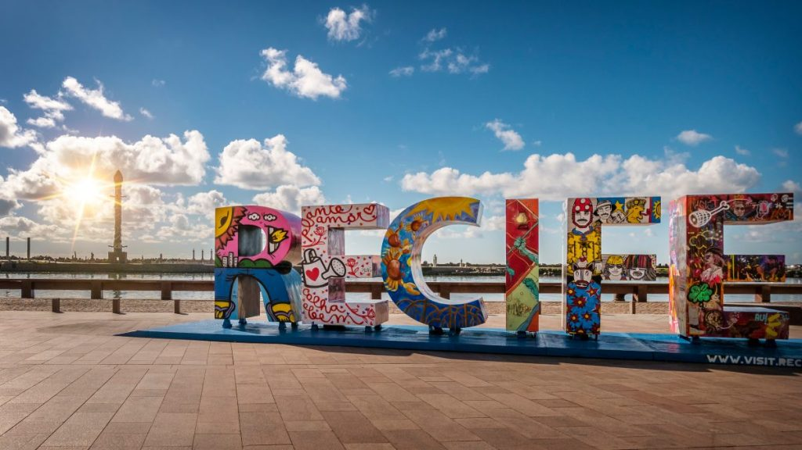
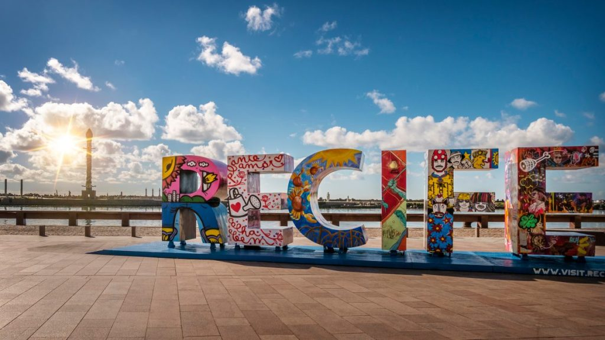

Sobre o Recife Antigo
O Recife Antigo é um bairro histórico, também conhecido como Bairro do Recife e fica localizado na região central da capital de Pernambuco. Ele é conhecido por sua arquitetura colonial, ruelas de paralelepípedos e casarões coloridos. É um bairro encantador que oferece uma combinação única de história, cultura e beleza natural
Este bairro é um destino turístico popular, oferecendo restaurantes, bares, lojas e uma vista incrível do Rio Capibaribe.
Paradas obrigatórias
Marco Zero:
O ponto de partida perfeito para o nosso passeio é o famoso Marco Zero, uma praça icônica onde você pode encontrar uma enorme rosa-dos-ventos no chão. Este é o local onde a cidade do Recife foi fundada em 1537 e é considerado o coração do bairro. A partir daqui, você pode apreciar a vista do Rio Capibaribe, que serpenteia por toda a cidade.
Paço do Frevo:
O Paço do Frevo é um local dedicado a preservar e promover a cultura do frevo, uma dança tradicional do carnaval de Pernambuco. Aqui, você pode aprender mais sobre a história do frevo, participar de aulas de dança e desfrutar de exposições interativas.
Museu Cais do Sertão:
Este museu fascinante celebra a cultura e história do sertão nordestino, apresentando a vida e obra de Luiz Gonzaga, um dos mais famosos músicos de forró do Brasil. O museu oferece uma experiência imersiva que combina música, arte e história.
Rua do Bom Jesus:
Anteriormente conhecida como Rua dos Judeus, esta rua é uma verdadeira joia histórica. Ela abriga edifícios coloniais coloridos, restaurantes, lojas e a Sinagoga Kahal Zur Israel, a primeira sinagoga das Américas. É uma parte importante da história judaica no Brasil.
Arte de Rua:
O Recife Antigo é famoso por suas intervenções artísticas ao ar livre. Você encontrará belos murais de grafite e esculturas espalhados por todo o bairro. Muitos deles representam a rica cultura nordestina.
Bares e Restaurantes:
Se você é um amante da gastronomia, o Recife Antigo é o lugar certo para você. Há inúmeros restaurantes que servem pratos tradicionais da região, como o bolo de rolo e a tapioca. Não se esqueça de provar a culinária local em um dos muitos bares e restaurantes à beira do rio.
Eventos Culturais:
O bairro é palco de diversos eventos culturais ao longo do ano. O Carnaval do Recife é uma festa incrível, com muita música, dança e alegria. Além disso, o Recife Antigo recebe festivais de música, exposições de arte e feiras ao ar livre.
Galeria de Imagens
 
